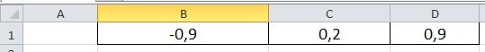
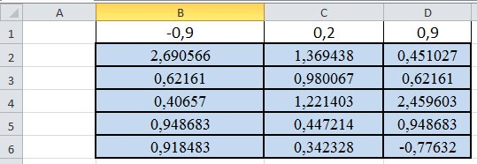
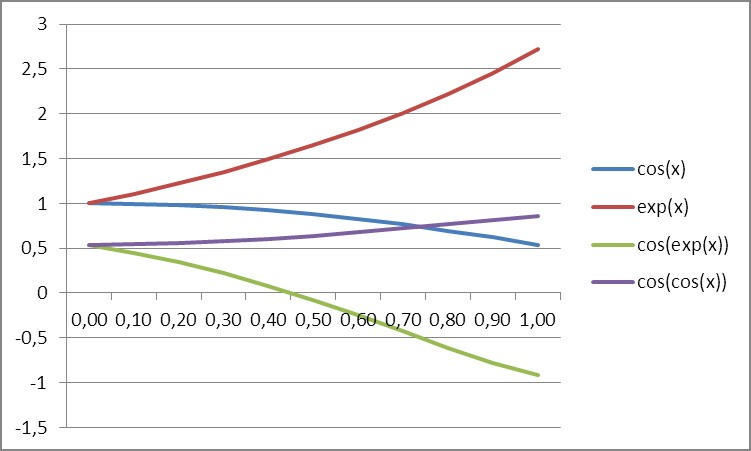
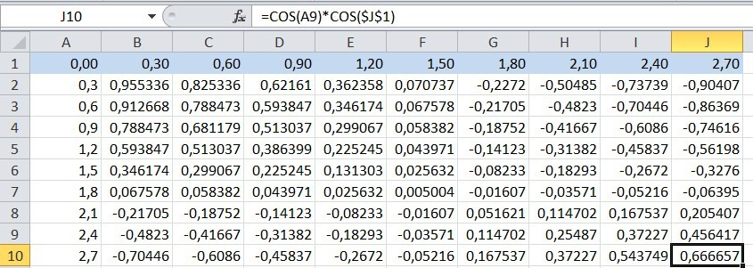
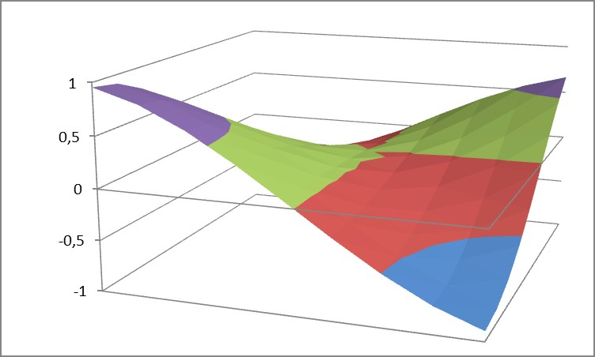
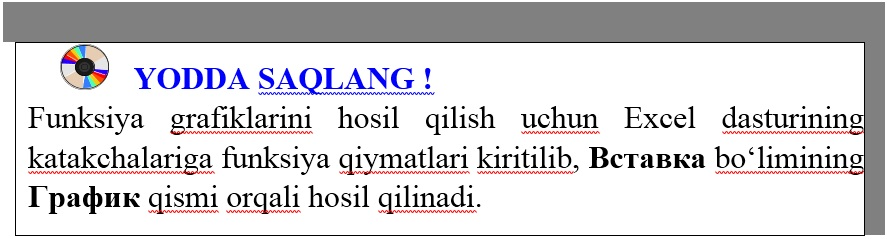

13-DARS. MATEMATIK FUNKSIYALAR
MS Excel 2010 elektron jadvallarida keng qamrab olingan iqtisodiyot muhandislik masalalarini yechishda qo‘llanilishi keng bo‘lgan matematik funksiyalarni o‘rganamiz.
1-mashq. MS Excel 2010 matematik funksiyalaridan foydalangan holda y=arccosx, y=cosx, y=ex, y=cosex funksiyalarni argumentning turli qiymatlarida hisoblang.
Bajarish: B3:D3 kataklarida

qiymatlarni kiritib olamiz;
Формулы bo‘limining Математические qismida acos, cos, exp корень(ABS) funksiyalariga murojaat qilib B4:B8 kataklarida mos ifodalarni hosil qilamiz;
Nisbiy murojaat usulidan foydalanib qolgan kataklargaamalni davom ettiramiz.

Shunday qilib ixtiyoriy murakkablikdagi funksiyalarni hisoblab olishimiz mumkin.
2-mashq. y=cosx, y=ex, y=cosex, y=cos(cosx) funksiyalarning grafiklarini hosil qilish.
Bajarish:
• F3:P3 kataklarda x ning qiymatlarini kiritiladi;
• F4 katagida Формулы bo‘limining Математические qismidan cos funksiyasi olinib uning argumenti uchun F3 katagiga murojaat etiladi;
• F4 katagida hisoblanayotgan ifodalar nisbiy murojaat yordamida F5:F7 kataklarida mos ravishda hosil qilinadi;
• F4:F7 blokida bajarilayotgan amallar o‘z navbatida nisbiy murojaat yordamida qolgan kataklarda o‘zlashtiriladi;
• Вставка bo‘limining График qismining tegishli bandiga murojaat etilib qaralayotgan funksiyalarning grafiklari hosil qilinadi:

3- mashq. z=cosxcosy, funksiyaga mos tasvirni hosil qilish.
Bajarish:
• A1:J1 kataklariga qiymatlar kiritiladi;
• A2:A10 kataklariga tegishli qiymatlar kiritiladi;
• B2 katagiga =COS($A$1)*COS(B1) ifoda yoziladi;
• B2 dan B10 katagigacha formula aralash murojaatni qo‘llanilgan holda hosil qilinadi;
• B10 dan J10 katagidagi ifoda aralash murojaatni qo‘llanilgan holda hosil qilinadi.
Natijada quyidagi oyna hosil bo‘ladi:

• B2:J10 bloki ajratib olinadi;
• Вставка-Другие-Поверхность ketma-ketligi tanlanib, qaralayotgan funksiyalarning grafigi hosil qilinadi;
• hosil bo‘lgan grafikdan muhim bo‘lmagan yozuvlar olib tashlanadi.
Natijada quyidagi tasvir hosil bo‘ladi:



1. Funksiya grafigini hosil qilish ketma-ketligini tushuntirib bering.
2. Y=sinx funksiyani grafigini hosil qiling.
3. Y=cos2 x funksiyani grafigini hosil qiling.

1. Y=sin2 x funksiyani grafigini hosil qiling.
2. Y= x2 va Y= x3 funksiyalarning grafiklarini bitta oynada hosil qiling.